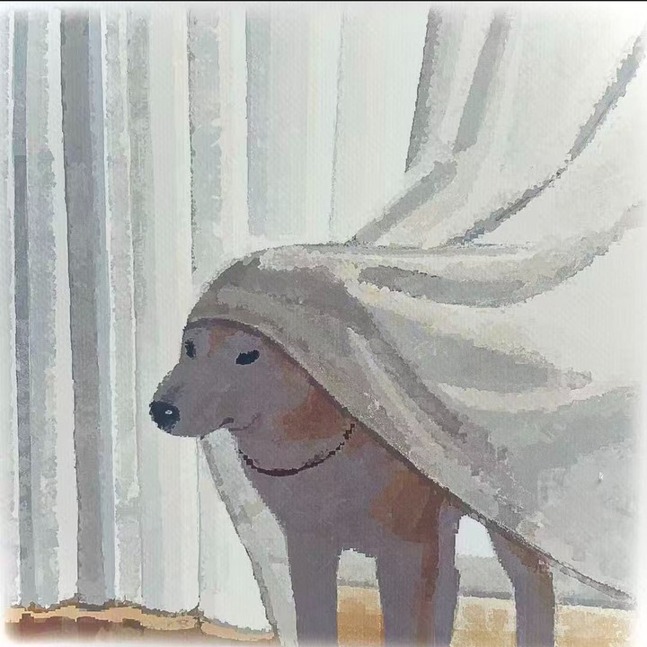

COMPETITION / 2026
千问办公 AI 管理实践挑战赛
团队统筹 / 成员
- 赛题方向：面向人力资源与组织管理场景的 AI 办公应用
- 担任小组统筹，负责任务拆分、进度跟进与组内协作
- 独立承担其中一项子任务的设计与交付
- 通过比赛完整走了一遍“需求理解—方案设计—交付物”的流程，理解了大模型能力落地到具体业务的链条
RESUME / 2026

PROFILE / 2026
华中科技大学 · 软件学院
人工智能（大模型）试验班 · 本科在读（大一）
希望尽早进入真实科研环境接受系统训练，而不止于课程层面。
华中科技大学/软件学院
人工智能（大模型）试验班 本科在读（大一）
在修课程COMPETITION / 2026
团队统筹 / 成员
PROJECT / WEB · 2026
个人项目 · 设计与开发
RESEARCH MATCH
蒋兴宇副教授课题组
计算机视觉与人工智能
希望从基础工作做起：数据整理与标注、论文与代码复现、实验记录，逐步参与具体课题
动机：作为大模型试验班学生，希望尽早进入真实科研环境接受系统训练，而不止于课程层面
每周可稳定投入
完成 Python 入门，独立跑通图像分类任务
争取参与组内具体课题的基础工作
基础尚浅但目标明确，能沉下心做基础工作；问题先自查，查不到再问清楚再动手。